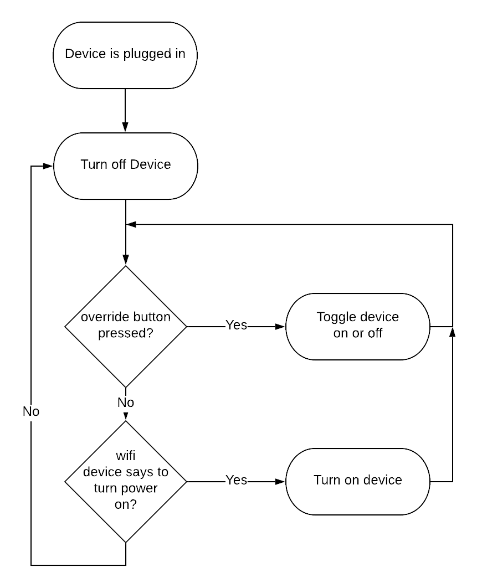
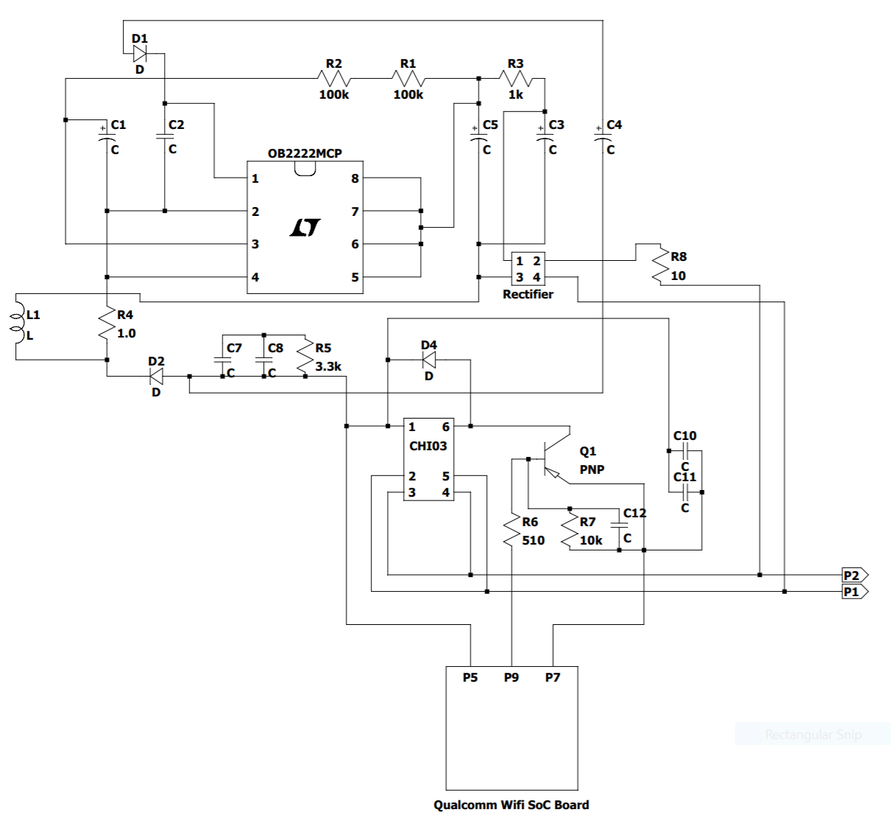

Let's look at this history...
The TP-Link smart plug is one of many Internet of Things devices that allows you to connect different parts of your home with other devices in your home, using devices such as a Google Home or an Amazon Alexa. These technologies are relatively new, becoming popularized over the last 5 years. In fact, the technology is so new it is adapting still, with new IoT gadgets coming out every day.
People want the ability to control household objects with their voice, and the TP-Link smart plug allows just that! You can plug in a lamp or a fan, among other things. The TP-Link plug connects to your smartphone and lets you turn it on or off with your voice, your phone, or on a schedule. You can also access it from away from your home, so if you forget to turn off your lamps frequently, this might be the product for you!
Take a look at a photo gallery here.
If that link is down, here are the photos hosted on this website.
Fair warning though, it's 245MB of pictures.
As you can see, the device is very small and compact. In fact, it allows you to plug in two at a time in one outlet, whereas much of the competition is too large to fit two side-by-side.
I've graphed out a handy flowchart that shows product operation! Check it out:

This thing had a nice and simple PCB. There were actually two PCBs, but one of
them is just a WiFi board from Qualcomm. Here's the schematic:

As of April 11, 2019:
The cost of each unit
on Amazon
is $19.79. You can also buy it
from Best Buy for $20.99, or you could buy it
from Walmart for $19.79, the same price as Amazon.
The Bill of Materials for the parts I found is:
| Part Name | Description | Where to buy | Quantity | Unit Price | Total Cost |
|---|---|---|---|---|---|
| Churod CHI03-S-105DA2 | 1811W Power Relay | AliExpress | 1 | $0.66 | $0.66 |
| Polarized Capacitors | Various polarized capacitors | Digikey | 4 | $0.01 | $0.04 |
| SMB Capacitors | Various surface mount capacitors | Digikey | 6 | $0.00 | $0.01 |
| 10 ohm resistor | 10 ohm through-hole resistor +/-0.25% | Digikey | 1 | $1.26 | $1.26 |
| 1k ohm resistor | 1k ohm through-hole resistor +/- 10% | Digikey | 1 | $2.08 | $2.08 |
| 510 ohm resistor | 510 ohm SMB resistor | Digikey | 1 | $0.01 | $0.01 |
| 10k ohm resistor | 10k ohm SMB resistor | Digikey | 1 | $0.01 | $0.01 |
| 3.3k ohm resistor | 3.3k ohm SMB resistor | Digikey | 1 | $0.01 | $0.01 |
| 100k ohm resistor | 100k ohm SMB resistor | Digikey | 2 | $0.01 | $0.02 |
| 1.0 ohm resistor | 1.0ohm SMB resistor | Digikey | 1 | $0.01 | $0.01 |
| PNP Transistor | PNP transistor SOT23 300V rated | Digikey | 1 | $0.04 | $0.04 |
| Diode small | Digikey | 1 | $0.06 | $0.06 | |
| Diode medium | Digikey | 1 | $0.09 | $0.09 | |
| 1N4007 Rectifier Diode | Labeled M7 | Digikey | 1 | $0.30 | $0.30 |
| PJ7475 MB10F | Bridge Rectifier Diode | Digikey | 1 | $0.05 | $0.05 |
| OB2222MCP | Power Switch | Alibaba | 1 | $0.10 | $0.10 |
| QCA4010 | Qualcomm Wifi SoC Board | ??? | 1 | $1.00 | $1.00 |
| Non-Electrical Parts: | |||||
| Part Name | Description | Where to buy | Quantity | Unit Price | Total Cost |
| Wall plug prongs female | Prongs for a standard wall plug to attach to | Made in house | 3 | $0.10 | $0.30 |
| Wall plug prongs male | Prongs to plug in to standard wall plug | Made in house | 3 | $0.10 | $0.30 |
| Plastic housing | Dye-cast plastic housing for product | Made in house | 3 | $0.05 | $0.15 |
| Screw | Small screw to help affix PCB to plastic housing | Alibaba | 1 | $0.01 | $0.01 |
| Packaging | Nice multi-color printed box and molded insides | Made in house | 1 | $1.00 | $1.00 |
| Total Costs: |
|---|
| $7.52 |
| Selling Price: |
| $19.79 |
| Gross Margin: |
| 62.01% |
In order to get the PCB separated from the plastic housing, I had to pry apart some important metal pieces, which makes reassembly impossible. Furthermore, I damaged a couple components, and since this is plugging into the wall for power, I think it is safest to not plug it in with damaged power componenets. I'm sorry.
Website design inspired by the geniuses behind bettermotherfuckingwebsite.com.
This page was created by me.